Need for loops in programming:
• Loops are needed for repeating a statement or group of statements while a given condition is satisfied as true.
• Loops is needed in programs to excute the code as many times required.
• In types of loops for loop are needed as they Best express the programers intent.
• It also reduces the Time and effort of the users.
• Loops are needs to iterate some code that would otherwise takes lines and lines for execution.
Where do we use loops in our daily life.
• a game requires loop that repeats the drawing of board, movement of items, input etc.
• In order to get the print outs of the pay slips of employees of a particular cost requires a loop to be assigned an then the loops can be employed to pick data belongings it's accounts such as current , Long term assets, expenses etc. Which may in turn to help to prepare trial balance income statement and other report that are need by management.
• There are two types of loops in python namely while and for.
Loop control statements:
Loop control statements change execution from its normal sequence. When execution leaves a scope, all automatic objects that were created in that scope are destroyed. Python supports the following control statements.
1. Continue
2. Break
3. Pass
Continue: It returns the control to the beginning of the loop.
Break Statement: It brings control out of the loop.
Pass Statement: We use pass statement to write empty or when we don’t have content to execute. Pass is also used for empty control statements, functions and classes.
Using else statement with loops:
• loop executes the block until a condition is satisfied. When the condition becomes false, the statement immediately after the loop is executed.
The else clause is only executed when your condition becomes false. If you break out of the loop, or if an exception is raised, it won’t be executed.
1.While Loop:
while loop is used to execute a block of statements repeatedly until a given a condition is satisfied. And when the condition becomes false, the line immediately after the loop in program is executed.
Syntax:
while expression:
statement(s)
• Within while loop statements are Indented by 4 spaces.
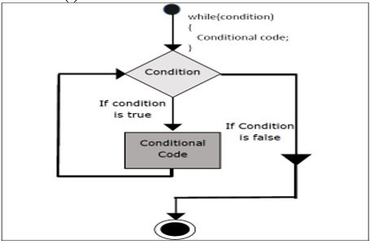
Simple while loop:
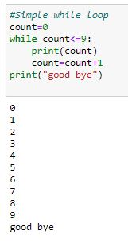
Single statement while block
• Just like the if block, if the while block consists of a single statement the we can declare the entire loop in a single line.
count = 0
while (count == 0):
print("Hello ")
• It is suggested not to use this type of loops as it is a never ending infinite loop where the condition is always true and you have to forcefully terminate the compiler.
Syntax:
while condition:
statements
else:
statements
• Within while loop statements are Indented by 4 spaces.
Using else stmt with while loop:
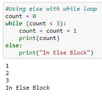
Using Continue stmt with while loop:
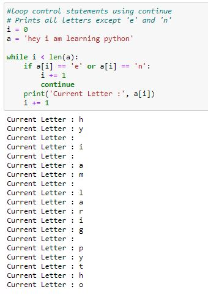
Using break stmt with while loop:
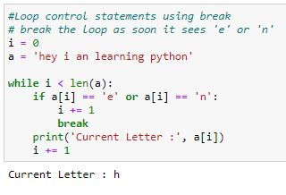
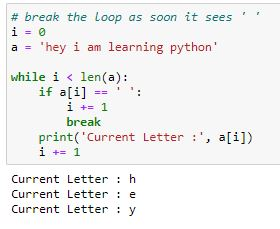
Using pass stmt with while loop:
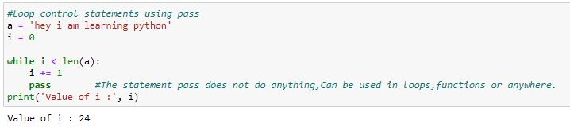
A guessing game using while loop.
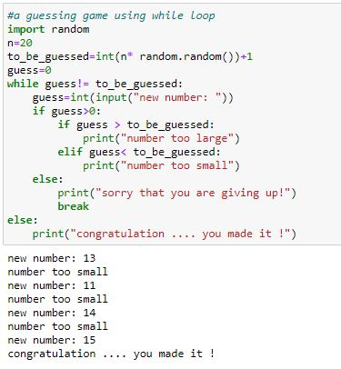
2.for loop:
1)for loop is used to iterating the statements using range() function.
range(): The range() function returns a sequence of numbers, starting from 0 by default, and increments by 1 (by default), and stops before a specified number.
It takes following parameters.
1)Start value ----> Optional, An integer number specifying at which position to start. Default is 0
2)Stop value ----> Required. An integer number specifying at which position to stop (not included).
3)Step value ----> Optional. An integer number specifying the incrementation. Default is 1.
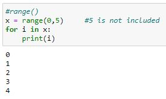
Using range() in for loop:
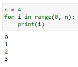
• Within for loop statements are Indented by 4 spaces.
Using step with range() in for loop:
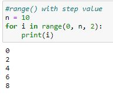
• Within for loop statements are Indented by 4 spaces.
Using else with for loop:
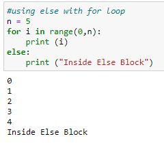
• Within for loop statements are Indented by 4 spaces.
loop control statements with continue :
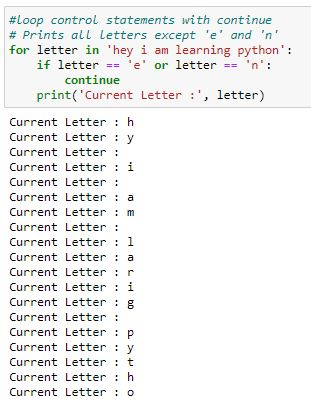
loop control statements with break:
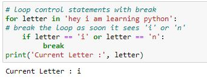
loop control statements with pass:
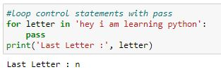
Basic example(Factorial of given number) using for loop:
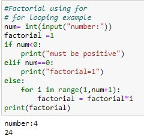
Python Program to show range() basics printing a number:
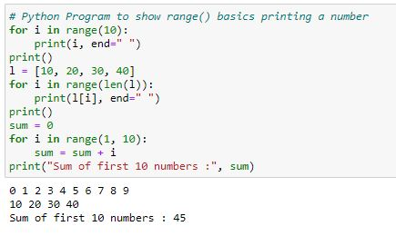